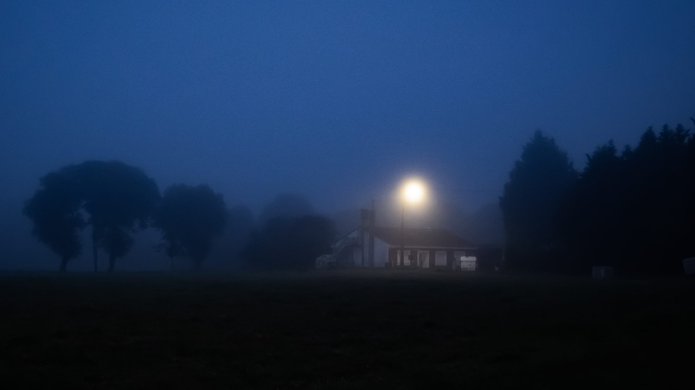
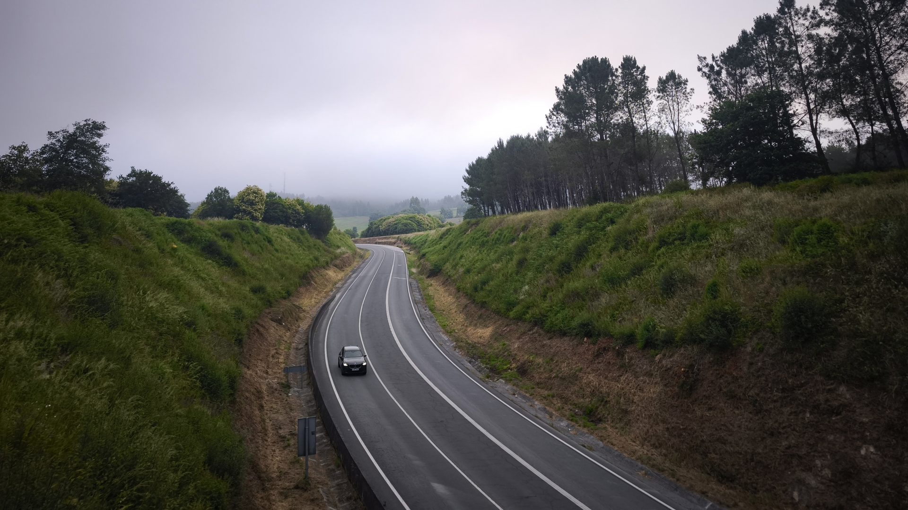
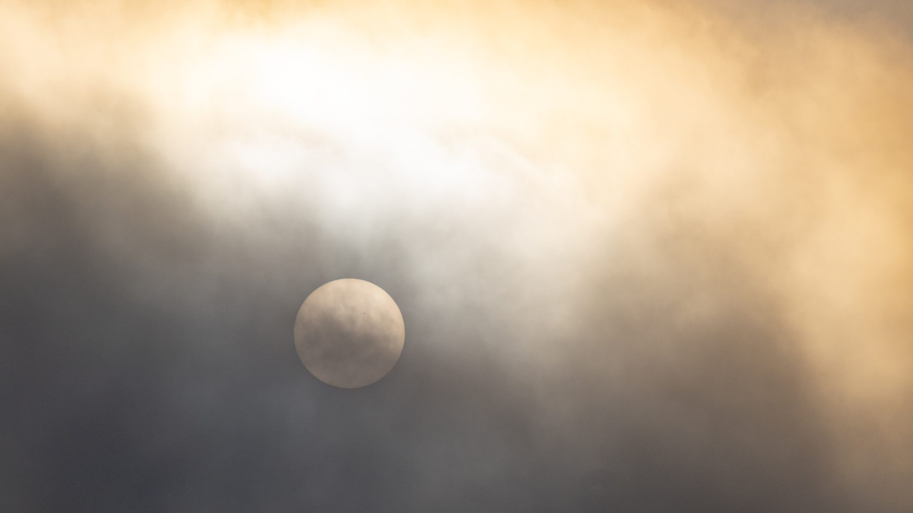
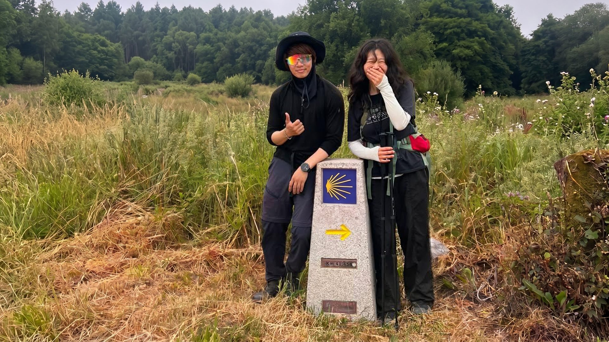
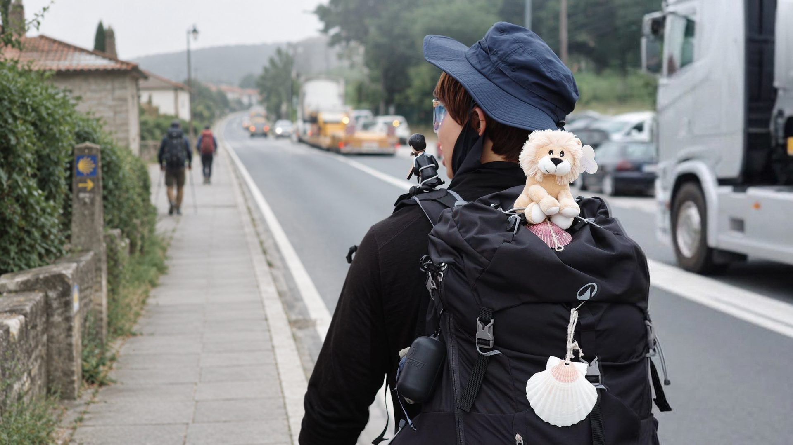
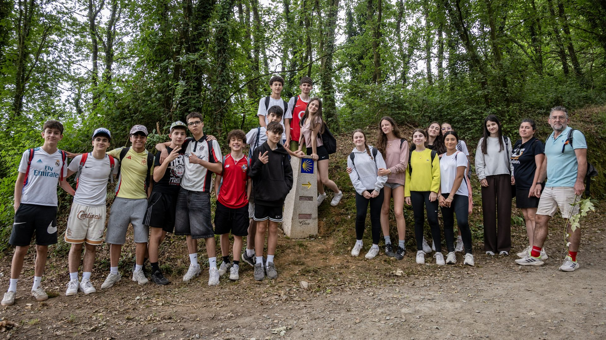
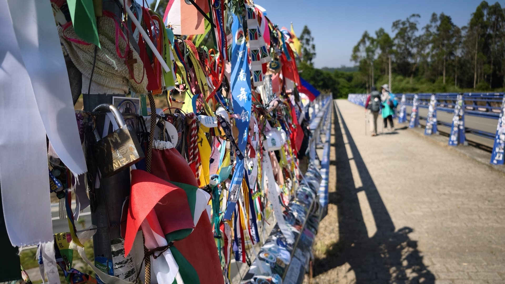
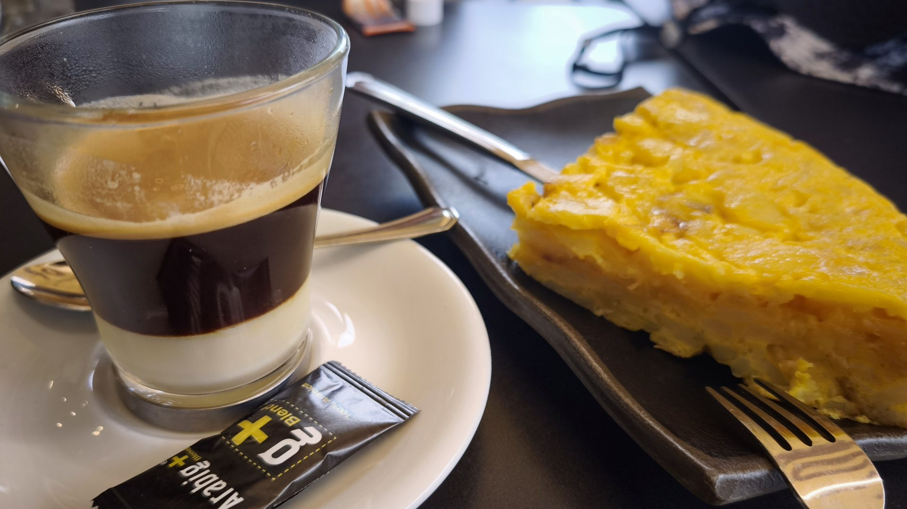
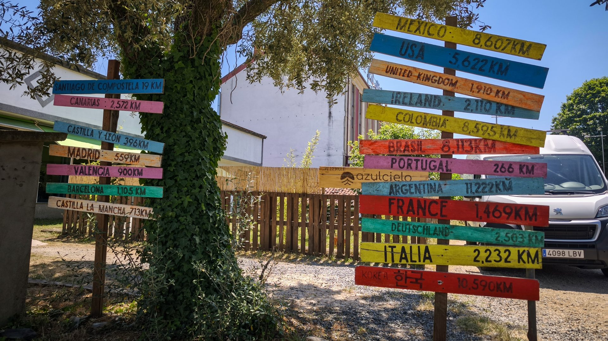
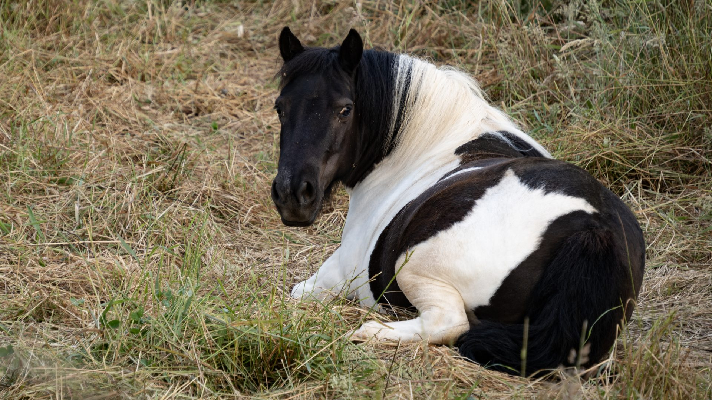

Day 28｜霧中行走、畢業前夕、終於睡到下鋪
2026 年 6 月 17 日 · Melide → O Pedrouzo · 33km
今天是第 28 天，前往 O Pedrouzo，距離 33 公里——抵達終點聖地牙哥前的最後一個大站。



一整天都在濃濃的霧裡趕路。自從加快腳步，已經好久沒遇見熟悉的面孔，沒想到在路標旁居然又碰上之前認識的韓國人，還幫我拍了這張背影照！久別重逢的那一刻心情特別激動——也或許因為終點就在眼前，像極了明天就要畢業的學生！


路上又遇到這群活力滿滿的學生！看到帶隊老師拿著樹枝像趕羊群一樣，把調皮的學生趕回隊伍裡，畫面實在太逗趣。擦肩而過時他們興奮地跟我擊掌——這股青春熱血真的會傳染！

欄杆上掛滿隨風飄揚的各國布條，當然也有台灣的！在寫滿塗鴉的酒瓶牆中，竟然還驚喜發現一張熟悉的「好彩頭」貼紙——這些都是無數朝聖者在這裡留下的故事。而且最棒的是：走了 28 天，我終於睡到下鋪啦！不用攀爬梯子，真的太幸福了！




📚 朝聖者小百科：O Pedrouzo & 加利西亞桉樹
佩德羅索（O Pedrouzo）距離 Santiago 只剩約 20 公里——最後一晚。整段路最鮮明的嗅覺記憶是桉樹：加利西亞到處都是桉樹林，細雨中散發的清香，是終點前最後的標誌氣味。
最後一晚很多朝聖者失眠——不是緊張，是捨不得。早點到、早點休息，把體力留給明天最後的 20 公里。
🌿 桉樹清香是終點前的嗅覺記憶，留意一下
🛏️ 走了 28 天終於睡到下鋪，小確幸是大幸福
🥾 33km · 畢業前夕的霧中行走
| 咖啡 | €2.5 |
| 證書＋捲筒 | €5.0 |
| 火腿麵包＋啤酒 | €6.0 |
| 住宿 | €26.0 |
| 韓式炸雞＋啤酒 | €21.5 |
| 合計 | €61.0 |
🎬 對應 Vlog EP7｜最後 100 公里：Samos → Santiago 五天全紀錄